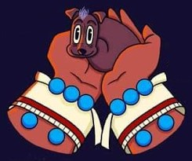

1 Xolotl creo al Xolo de una
astilla del hueso de la vida.

- ¿Xoloitzcuintle?
- Dios de la transformacion
- Extraño
- Perro
2 Xolo contaba con todo
para proteger al hombre.

- Caracteristicas:
- Social
- Cariñoso
- Fiel
- Territorial
- Vigilante
3 Al morir el hombre, xolo
tenia una mision clara....

- ¿Al final?
- Era sacrificdo y enterrado
con su dueño.
4 ....transitar con el hacia
el inframundo.
- ¿Al final?
- Era sacrificdo y enterrado
con su dueño.